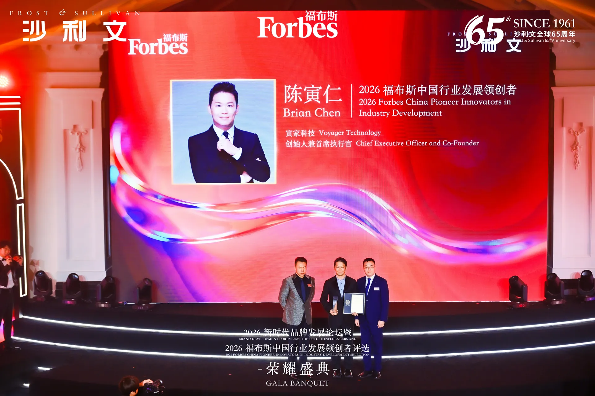
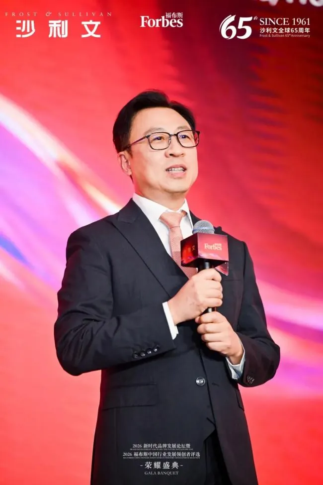
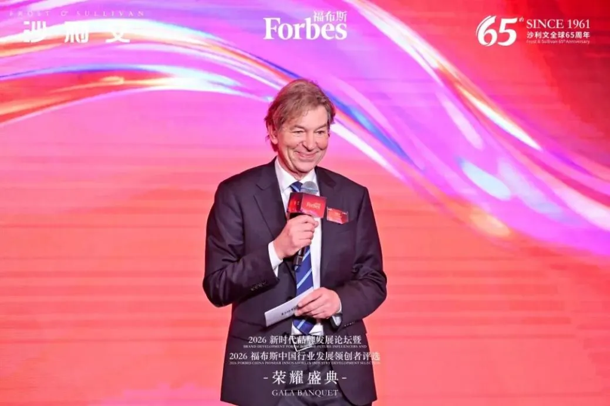
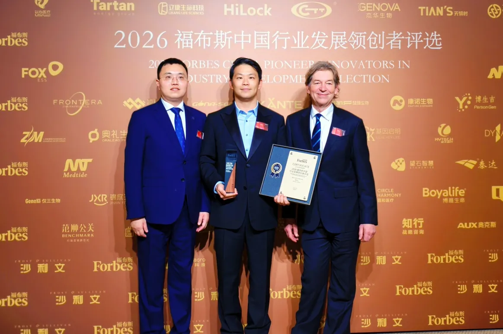

3月18日，寅家科技創始人兼CEO陳寅仁（Brian Chen）先生被授予“2026福布斯中國行業發展領創者”稱號。該獎項由福布斯中國與全球知名增長諮詢機構弗若斯特沙利文聯合發起，聚焦AI、大消費、醫療健康、新能源、製造業與服務業等關鍵領域，旨在尋找那些在複雜環境中以創新驅動增長、以長期主義推動行業進步的企業、品牌與個人。
這不僅是對陳寅仁先生個人領導力與行業貢獻的權威肯定，更標誌著寅家科技——這家從創業初期便錨定“技術自主”的企業，在智能輔助駕駛和智能座艙賽道的創新實力獲得主流市場與專業機構的雙重認可。
 寅家科技創始人兼CEO陳寅仁——2026福布斯中國行業發展領創者
寅家科技創始人兼CEO陳寅仁——2026福布斯中國行業發展領創者
盛典現場，沙利文中國業務主管合夥人兼董事總經理陸景、福布斯中國集團商務運營總經理郭雋禕為寅家科技創始人兼首席執行官陳寅仁頒獎。沙利文全球合夥人、亞太區聯合主席、中國董事長王昕博士盛典上致辭並分享到，今年的領創者呈現出顯著的全球化格局，“出海已經從選擇題變成了必答題”。他闡釋了“領創者”的深刻內涵：“領”代表著領先、引領、領導，真正的領創者應具備三個特質——技術或模式創新的引領者、產業價值的創新者、長期主義的踐行者；同時需要具備全球視野、技術洞察力和長期戰略定力三種能力。王昕博士強調，持續創造產業價值的企業終將獲得市場認可，堅持長期主義的探索者終將成為時代的引領者。

盛典現場左：福布斯中國集團商務運營總經理郭雋禕
中：寅家科技創始人兼首席執行官陳寅仁
右：沙利文中國業務主管合夥人兼董事總經理陸景

沙利文全球合夥人、亞太區聯合主席、中國董事長王昕博士
福布斯中國集團首席戰略官晏格文（Graham Earnshaw）在致辭中表示，全球經濟和產業正在經歷深刻變革，人工智能、先進製造、新能源、生物科技等領域不斷取得突破，數字技術與實體產業的融合持續加深。他指出，在不確定性中保持創新活力、在競爭中實現長期發展已成為企業和行業的重要課題。此次評選關注的不僅是企業成績，更重要的是其在推動技術進步、產業升級、商業模式創新等方面發揮的引領作用，期待通過評選呈現中國各行業最具代表性的創新實踐，搭建跨行業交流平臺，讓更多優秀創新者被看見、被傳播。

福布斯中國集團首席戰略官晏格文（Graham Earnshaw）致辭

頒獎現場
左：沙利文中國業務主管合夥人兼董事總經理陸景
中：寅家科技創始人兼首席執行官陳寅仁
右：福布斯中國集團首席戰略官晏格文（Graham Earnshaw）
寅家科技——中國汽車產業自主化、全球化的創業答卷
寅家科技成立於2013年，正值中國汽車產業向“智能化”轉型的萌芽期，車載視覺感知核心技術與專利長期被國外企業壟斷。曾深耕汽車電子領域多年的陳寅仁，敏銳察覺到這一行業痛點，毅然辭去穩定工作，帶著“讓中國車企用上自主可控的車載智能技術”的初心，創立了寅家科技。創業初期充滿挑戰：初期海歸團隊僅有5人。陳寅仁親自擔任首席研發工程師，帶領團隊連續攻堅，通過優化降噪算法與動態曝光參數，改善了雨天車載攝像頭成像模糊問題，為行業技術優化提供了可行方案。
十三年後，寅家集團員工規模已達400餘人，其中研發團隊佔比接近三分之一，高比例的研發投入為企業技術創新築牢人才根基。企業累計持有核心專利200餘項，在車載視覺感知、智能輔助駕駛算法、智能座艙及高階域控系統等核心領域實現技術突破，逐步降低對進口芯片的依賴。憑藉硬核的技術實力與紮實的產業化成果，企業屢獲權威認可：2021年，寅家科技斬獲由上海市科學技術委員會、上海市經濟和信息化委員會、上海市財政局聯合頒發的上海市“科技小巨人”企業榮譽稱號；2024年，更是成功獲評工業和信息化部頒發的國家級“專精特新小巨人企業”稱號，成為國內車載視覺感知、智能輔助駕駛與智能座艙領域兼具技術深度與產業實力的企業之一。
技術服務於市場。寅家科技構築了“技術-產品-市場”閉環生態，旗下VT-Pilot®輔助駕駛、VT-Cockpit®智能座艙兩大核心產品矩陣及VT-Camera智能視覺感知技術已經贏得國內市場認可，服務於奧迪、奇瑞、一汽、東風、長安、豐田等主流車企。截至當前，量產產品覆蓋車型達100餘款。2022年，陳寅仁先生再次把握全球化機遇，帶領寅家團隊積極佈局海外市場，成功實現智能輔助駕駛系統出口，拿下公司在海外的第一份戰績，為中國品牌出海提供經驗。
價值延申——從汽車產業到泛機器人領域
陳寅仁先生在任職寅家CEO期間，他帶領寅家團隊參與10次國家級、地方級科研項目，推動企業在車載攝像頭、全視駕駛輔助系統等核心技術的創新突破，並參與制定車載攝像頭、車載記錄儀、全視駕駛輔助系統等多項車載智能行業標準，助力推動行業安全標準升級與用戶體驗優化。
隨著AI產業的興起，陳寅仁將目光投至低空經濟、具身智能等泛機器人領域。他提出“技術複用、價值延伸”的發展戰略，進一步拓展核心技術的應用邊界。短短幾年內，寅家科技憑藉“複雜環境下融合視覺的移動機器人導航控制關鍵技術與應用”項目，榮獲教育部“工程技術研究成果獎”二等獎。
以長期主義賦能中國智造
談及獲獎，陳寅仁先生表示：“這份榮譽不僅是對我個人的肯定，更是對寅家科技長期堅持自主創新的鼓勵。十多年來，我們堅持全棧自研，從視覺感知到智能決策與控制，把核心能力掌握在自己手中。我們見證並參與了中國汽車產業從追趕到突破的進程，也更加堅定一個信念，那就是真正的競爭力，來自長期主義和自主創新。今天，寅家不僅專注智能出行，更把智能輔助駕駛的能力延伸到低空經濟、具身智能等泛機器人領域，並持續加大對AI的投入。我們希望，中國智造不僅能追上世界，更能參與定義未來。這份榮譽是新的起點。感謝主辦方、客戶與合作伙伴，也感謝每一位同事。期待與各位同行攜手前行。謝謝大家。”
相信在陳寅仁先生的掌舵下，寅家科技將持續以技術創新為驅動，為中國汽車產業智能化、全球化發展注入更多動能。